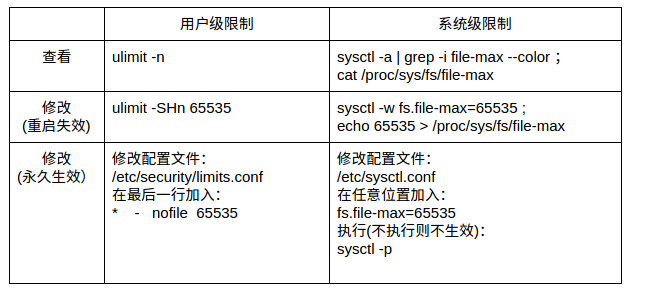

常用命令
多条命令执行结果不输出到终端
1 | 使用;分隔的多条命令执行结果之间互不干扰 |
后台运行
当用户注销（logout）或者网络断开时，终端会收到 HUP（hangup）信号从而关闭其所有子进程。因此，解决办法有两种途径：
- 让进程忽略 HUP 信号；
- 让进程运行在新的会话里从而成为不属于此终端的子进程。
nohup
nohup 的用途就是让提交的命令忽略 hangup 信号，一般我们可在结尾加上”&”来将命令同时放入后台运行，也可用”>filename 2>&1”来更改缺省的重定向文件名。
1 | nohup ping www.baidu.com & |
setsid
换个角度思考，如果我们的进程不属于接受 HUP 信号的终端的子进程，那么自然也就不会受到 HUP 信号的影响了。setsid 就能做到这一点。
1 | setsid ping www.baidu.com |
进程 ID(PID)为31094，而它的父 ID（PPID）为1（即为 init 进程 ID），并不是当前终端的进程 ID。
&
将一个或多个命名包含在()中就能让这些命令在子 shell 中运行中，从而扩展出很多有趣的功能。
当我们将&也放入()内之后，就会发现所提交的作业并不在作业列表中，也就是说，是无法通过jobs来查看的。
1 | (ping www.baidu.com &) |
从上例中可以看出，新提交的进程的父 ID（PPID）为1（init 进程的 PID），并不是当前终端的进程 ID。因此并不属于当前终端的子进程，从而也就不会受到当前终端的 HUP 信号的影响了。
查看进程
概述
- VSS - Virtual Set Size 虚拟耗用内存（包含共享库占用的内存），一个进程总共可访问的地址空间。其大小还包括了可能不在RAM中的内存（比如虽然malloc分配了空间，但尚未写入）。 VSS 很少被用于判断一个进程的真实内存使用量。
- RSS - Resident Set Size 实际使用物理内存（包含共享库占用的内存），一个进程在RAM中真实存储的总内存。但是RSS还是可能会造成误导，因为它仅仅表示该进程所使用的所有共享库的大小，它不管有多少个进程使用该共享库，该共享库仅被加载到内存一次。所以RSS并不能准确反映单进程的内存占用情况。
- PSS - Proportional Set Size 实际使用的物理内存（比例分配共享库占用的内存），按比例表示使用的共享库， 例如：如果有三个进程都使用了一个共享库，共占用了30页内存。那么PSS将认为每个进程分别占用该共享库10页的大小。 PSS是非常有用的数据，因为系统中所有进程的PSS都相加的话，就刚好反映了系统中的总共占用的内存。 而当一个进程被销毁之后， 其占用的共享库那部分比例的PSS，将会再次按比例分配给余下使用该库的进程。这样PSS可能会造成一点的误导，因为当一个进程被销毁后，PSS不能准确地表示返回给全局系统的内存（the memory returned to the overall system）。
- USS - Unique Set Size 进程独自占用的物理内存（不包含共享库占用的内存），一个进程所占用的私有内存。即该进程独占的内存。 USS是非常非常有用的数据，因为它反映了运行一个特定进程真实的边际成本（增量成本）。当一个进程被销毁后，USS是真实返回给系统的内存。当进程中存在一个可疑的内存泄露时，USS是最佳观察数据。
一般来说内存占用大小有如下规律：VSS >= RSS >= PSS >= USS
free
1 | free -h |
top
1 | 得到进程的pid |
- 键入
P按照CPU排序输出 - 键入
M按照内存排序输出
ps
ps是显示瞬间进程的状态，并不动态连续；如果想对进程进行实时监控应该用top命令。如果输出较多可以结合less命令和管道来使用，即 ps -ef | less 。
- -A：所有的进程均显示出来，与 -e 具有同样的效用
- -a：显示现行终端机下的所有进程，包括其他用户的进程
- -u：以用户为主的进程状态/以针对用户的格式输出
- -x：通常与 a 这个参数一起使用，可列出较完整信息
- -l：较长、较详细的将该PID 的的信息列出；
- -j：工作的格式 (jobs format)
- -f：做一个更为完整的输出。
1 | 根据CPU使用率来升序排序 |
可以使用 -C 参数查看指定进程的信息：
1 | ps -f -C sleep |
也可以结合watch命令实时查看信息：
1 | 每秒执行一次ps -aux --sort -pmem, -pcpu |
proc
1 | cat /proc/$pid/status |
Android
procrank
1 | rocrank |
dumpsys
1 | dumpsys [options] |
可以在其后通过包名或者进程pid展示指定进程的信息。
UNIX与Linux
Linux 是一个类似 Unix 的操作系统（类UNIX系统），Unix 要早于 Linux，Linux 的初衷就是要替代 UNIX，并在功能和用户体验上进行优化，所以 Linux 模仿了 UNIX（但并没有抄袭 UNIX 的源码），使得 Linux 在外观和交互上与 UNIX 非常类似。
二者的区别：
- UNIX 系统大多是与硬件配套的，也就是说，大多数 UNIX 系统如 AIX、HP-UX 等是无法安装在 x86 服务器和个人计算机上的，而 Linux 则可以运行在多种硬件平台上；
- UNIX 是商业软件，而 Linux 是开源软件，是免费、公开源代码的。
UNIX/Linux系统结构：可以粗糙地抽象为 3 个层次：底层是 UNIX/Linux 操作系统，即系统内核（Kernel）；中间层是 Shell 层，即命令解释层；高层则是应用层。
- 内核层：内核层是 UNIX/Linux 系统的核心和基础，它直接附着在硬件平台之上，控制和管理系统内各种资源（硬件资源和软件资源），有效地组织进程的运行，从而扩展硬件的功能，提高资源的利用效率，为用户提供方便、高效、安全、可靠的应用环境。Linux 内核由如下几部分组成：内存管理、进程管理、设备驱动程序、文件系统和网络管理等。
- Shell层：Shell 层是与用户直接交互的界面。用户可以在提示符下输入命令行，由 Shell 解释执行并输出相应结果或者有关信息，所以我们也把 Shell 称作命令解释器，利用系统提供的丰富命令可以快捷而简便地完成许多工作。目前主要有下列版本的shell：
- Bourne Shell(sh)：贝尔实验室开发的
- Bourne Again Shell(bash)：GNU操作系统上默认的shell，大部分linux的发行套件使用的都是这种shell
- Korn Shell：是对Bourne SHell的发展，在大部分内容上与Bourne Shell兼容
- C Shell：是SUN公司Shell的BSD版本
- 应用层：应用层提供基于 X Window 协议的图形环境。X Window 协议定义了一个系统所必须具备的功能，可系统能满足此协议及符合 X 协会其他的规范，便可称为 X Window。
Linux内核与发行版
Linux内核是计算机操作系统的核心。一个完整的 Linux发行版包括了内核与一些其他与文件相关的操作，用户管理系统，和软件包管理器等一系列软件。每个工具都是整个系统的一小部分。这些工具通常都是一个个独立的项目，有相应的开发者来开发及维护。
Linux的众多发行版可能是基于不同的内核版本的。例如：流行的 RHEL6发行版是基于很老但是很稳定的 2.6.32 版本的Linux内核的。其他的一些发行版可能会很快的更新以适应最新的内核版本。需要特别注意的一点是，内核并不是一个非此即彼的命题，例如RHEL6就在2.6.32的内核中引进了新版本内核的许多改进。
各发行版提供的其他基本工具和组成部分还有包括以下的内容：C/C++编译器，gdbdebugger 调试工具，核心系统库应用程序，用于在屏幕上绘图的底层接口以及高级的桌面环境，以及供安装和更新包括内核在内的众多组建的系统
Debian是包括Ubuntu在内许多发行版的上游，而Ubuntu又是Linux Mint及其他发行版的上游。Debian在服务器和桌面电脑领域都有着广泛的应用。Debian是一个纯开源计划并着重在一个关键点上，稳定性。它同时也提供了最大的和完整的软件仓库给用户。
Android与Linux
- Android采用Linux作为内核
- Android对Linux内核做了修改，目的是适应在移动设备上使用
- Android开始作为Linux的一个分支，后来由于无法并入Linux的主开发树，已被Linux Kernel小组从开发树中删除
Android是在Linux内核基础上运行的，提供的核心系统服务包括安全、内存管理、进程管理、网络组和驱动模型等内容。在硬件层和系统中其他软件之间添加了硬件抽象层（HAL），严格上来说Android不算是Linux系统
Android内核是有标准的Linux内核修改而来的，继承了Linux内核的诸多优点，保留了Linux内核的主题框架，同时Android按照移动设备的要求，在文件系统、内存管理、进程间通信机智和电源管理方面进行了修改，添加了相关的驱动程序和必要的新功能。Android在很大程度上保留了Linux的基本架构。
GNU
GPL：GNU通用公共许可协议（英语：GNU General Public License，缩写GNU GPL 或 GPL），是被广泛使用的自由软件许可证，给予了终端用户运行、学习、共享和修改软件的自由。
GNU是一个自由的操作系统，其内容软件完全以GPL方式发布。这个操作系统是GNU计划的主要目标，名称来自GNU’s Not Unix!的递归缩写，因为GNU的设计类似Unix，但它不包含具著作权的Unix代码。GNU的创始人，理查德·马修·斯托曼，将GNU视为“达成社会目的技术方法”。
作为操作系统，GNU的发展仍未完成，其中最大的问题是具有完备功能的内核尚未被开发成功。GNU的内核，称为Hurd，是自由软件基金会发展的重点，但是其发展尚未成熟。在实际使用上，多半使用Linux内核、FreeBSD等替代方案，作为系统核心，其中主要的操作系统是Linux的发行版。Linux操作系统包涵了Linux内核与其他自由软件项目中的GNU组件和软件，可以被称为GNU/Linux。
GNU/Linux命名争议，是在自由及开放源代码软件社群成员内的，关于是应该把使用GNU软件与Linux内核组合之操作系统称为“GNU/Linux”还是“Linux”的争议。
GNU/Linux这一名称是由自由软件基金会的创立者与GNU计划的发起人理查德·斯托曼所提出的。GNU的开发者与其支持者，希望以该名称来作为此操作系统的正式名称。他们认为，此操作系统，包括了GNU系统软件包与Linux kernel，使用GNU/Linux这个名称，可以良好概括它的主要内容。况且，GNU项目原本就是以发展一个自由的操作系统为远程项目，但迟迟没有完成。而Linux kernel的出现刚好可以补足这个缺口。
Linux内核本身并不是GNU计划的一部分，GNU/Linux这个名称在Linux社群中并没有得到一致认同。一些发行版社群例如Debian采用了GNU/Linux这一名称，但许多Linux社群中的成员认为使用Linux这一名称是更好的，为此提出了数项理由，主张Linux这个名称朗朗上口，且在公众与媒体中更为通用。Linux内核项目的发起人林纳斯·托瓦兹（Linus Torvalds）偏好于使用Linux，但对于GNU/Linux这个名字并不强烈反感。
一切皆文件
描述
linux/unix下的哲学核心思想是一切皆文件。它指的是，对所有文件（目录、字符设备、块设备、套接字、打印机、进程、线程、管道等）操作，读写都可用fopen()/fclose()/fwrite()/fread()等函数进行处理，屏蔽了硬件的区别，所有设备都抽象成文件，提供统一的接口给用户，虽然类型各不相同，但是对其提供的却是同一套操作界面，更进一步，对文件的操作也可以跨文件系统执行。
操作一个已经打开的文件：使用文件描述符（file descriptor），简称fd，它是一个对应某个已经打开的文件的索引（非负整数）。
Windows的内部实现也近似于“一切皆文件”的思想，当然，这一切都只在内核里才有，下载一个WinObj这软件就可以看到，Windows上各种设备、分区、虚拟对象都是挂载到根“\”下的，通过这个树可以访问各种设备、驱动、文件系统等。
Windows与Linux不同的就是把这些对象又重新封装了一层WindowsAPI，对外以设备、盘符、文件等等表现出来，重新封装WindowsAPI的目的是为了兼容性，而设备、盘符、文件这些是为了让普通用户更好理解。
文件类型

Inode
概述
inode是一个重要概念，是理解Unix/Linux文件系统和硬盘储存的基础。
文件储存在硬盘上，硬盘的最小存储单位叫做”扇区”（Sector）。每个扇区储存512字节（相当于0.5KB）。操作系统读取硬盘的时候，不会一个个扇区地读取，这样效率太低，而是一次性连续读取多个扇区，即一次性读取一个”块”（block）。这种由多个扇区组成的”块”，是文件存取的最小单位。”块”的大小，最常见的是4KB，即连续八个 sector组成一个 block。
文件数据都储存在”块”中，那么很显然，我们还必须找到一个地方储存文件的元信息，比如文件的创建者、文件的创建日期、文件的大小等等。这种储存文件元信息的区域就叫做inode，中文译名为”索引节点”。每一个文件都有对应的inode，里面包含了与该文件有关的一些信息。
inode的内容
inode包含文件的元信息，具体来说有以下内容：
- 文件的字节数
- 文件拥有者的User ID
- 文件的Group ID
- 文件的读、写、执行权限
- 文件的时间戳，共有三个：ctime指inode上一次变动的时间，mtime指文件内容上一次变动的时间，atime指文件上一次打开的时间。
- 链接数，即有多少文件名指向这个inode
- 文件数据block的位置
可以用stat命令，查看某个文件的inode信息：
1 | stat README.md |
总之，除了文件名以外的所有文件信息，都存在inode之中。至于为什么没有文件名，下文会有详细解释。
inode的大小
inode也会消耗硬盘空间，所以硬盘格式化的时候，操作系统自动将硬盘分成两个区域。一个是数据区，存放文件数据；另一个是inode区（inode table），存放inode所包含的信息。
每个inode节点的大小，一般是128字节或256字节。inode节点的总数，在格式化时就给定，一般是每1KB或每2KB就设置一个inode。假定在一块1GB的硬盘中，每个inode节点的大小为128字节，每1KB就设置一个inode，那么inode table的大小就会达到128MB，占整块硬盘的12.8%。
查看每个硬盘分区的inode总数和已经使用的数量，可以使用df -i命令。
查看每个inode节点的大小，可以用如下命令：sudo dumpe2fs -h /dev/hda | grep "Inode size"
由于每个文件都必须有一个inode，因此有可能发生inode已经用光，但是硬盘还未存满的情况。这时，就无法在硬盘上创建新文件。
inode号码
每个inode都有一个号码，操作系统用inode号码来识别不同的文件。Unix/Linux系统内部不使用文件名，而使用inode号码来识别文件。对于系统来说，文件名只是inode号码便于识别的别称或者绰号。
表面上，用户通过文件名，打开文件。实际上，系统内部这个过程分成三步：首先，系统找到这个文件名对应的inode号码；其次，通过inode号码，获取inode信息；最后，根据inode信息，找到文件数据所在的block，读出数据。
使用ls -i命令，可以看到文件名对应的inode号码：
1 | ls -i README.md |
目录文件
Unix/Linux系统中，目录（directory）也是一种文件。打开目录，实际上就是打开目录文件。
目录文件的结构非常简单，就是一系列目录项（dirent）的列表。每个目录项，由两部分组成：所包含文件的文件名，以及该文件名对应的inode号码。
1 | ls命令只列出目录文件中的所有文件名： |
目录文件的读权限（r）和写权限（w），都是针对目录文件本身。由于目录文件内只有文件名和inode号码，所以如果只有读权限，只能获取文件名，无法获取其他信息，因为其他信息都储存在inode节点中，而读取inode节点内的信息需要目录文件的执行权限（x）。
查看目录大小：
1 | du -h --max-depth=1 |
硬链接
一般情况下，文件名和inode号码是”一一对应”关系，每个inode号码对应一个文件名。但是，Unix/Linux系统允许，多个文件名指向同一个inode号码。
这意味着，可以用不同的文件名访问同样的内容；对文件内容进行修改，会影响到所有文件名；但是，删除一个文件名，不影响另一个文件名的访问。这种情况就被称为”硬链接”（hard link）。
ln命令可以创建硬链接：ln 源文件 目标文件
1 | ls -li |
运行上面这条命令以后，源文件与目标文件的inode号码相同，都指向同一个inode。inode信息中有一项叫做”链接数”，记录指向该inode的文件名总数，这时就会增加1。反过来，删除一个文件名，就会使得inode节点中的”链接数”减1。当这个值减到0，表明没有文件名指向这个inode，系统就会回收这个inode号码，以及其所对应block区域。
创建目录时，默认会生成两个目录项：”.”和”..”。前者的inode号码就是当前目录的inode号码，等同于当前目录的”硬链接”；后者的inode号码就是当前目录的父目录的inode号码，等同于父目录的”硬链接”。
1 | ls -ai |
目录不能创建硬链接（hard link not allowed for directory）。
软链接(快捷方式)
文件A和文件B的inode号码虽然不一样，但是文件A的内容是文件B的路径。读取文件A时，系统会自动将访问者导向文件B。因此，无论打开哪一个文件，最终读取的都是文件B。这时，文件A就称为文件B的”软链接”（soft link）或者”符号链接（symbolic link）。
这意味着，文件A依赖于文件B而存在，如果删除了文件B，打开文件A就会报错：”No such file or directory”。这是软链接与硬链接最大的不同：文件A指向文件B的文件名，而不是文件B的inode号码，文件B的inode”链接数”不会因此发生变化。
ln -s命令可以创建软链接：ln -s 源文文件或目录 目标文件或目录
1 | ln -s test2 test1 |
inode的特殊作用
由于inode号码与文件名分离，这种机制导致了一些Unix/Linux系统特有的现象。
- 有时，文件名包含特殊字符，无法正常删除。这时，直接删除inode节点，就能起到删除文件的作用。
- 移动文件或重命名文件，只是改变文件名，不影响inode号码。
- 打开一个文件以后，系统就以inode号码来识别这个文件，不再考虑文件名。因此，通常来说，系统无法从inode号码得知文件名。
第3点使得软件更新变得简单，可以在不关闭软件的情况下进行更新，不需要重启。因为系统通过inode号码，识别运行中的文件，不通过文件名。更新的时候，新版文件以同样的文件名，生成一个新的inode，不会影响到运行中的文件。等到下一次运行这个软件的时候，文件名就自动指向新版文件，旧版文件的inode则被回收。
文件描述符
概念
文件描述符在形式上是一个非负整数。实际上，它是一个索引值，指向内核为每一个进程所维护的该进程打开文件的记录表。当程序打开一个现有文件或者创建一个新文件时，内核向进程返回一个文件描述符。在程序设计中，一些涉及底层的程序编写往往会围绕着文件描述符展开。
Linux 系统中，把一切都看做是文件，当进程打开现有文件或创建新文件时，内核向进程返回一个文件描述符，文件描述符就是内核为了高效管理已被打开的文件所创建的索引，用来指向被打开的文件，所有执行I/O操作的系统调用都会通过文件描述符。
文件描述符、文件、进程间的关系
1.描述：
- 每个文件描述符会与一个打开的文件相对应
- 不同的文件描述符也可能指向同一个文件
- 相同的文件可以被不同的进程打开，也可以在同一个进程被多次打开
2.系统为维护文件描述符，建立了三个表
- 进程级的文件描述符表
- 系统级的文件描述符表
- 文件系统的i-node表
- 在进程A中，文件描述符1和30都指向了同一个打开的文件句柄（#23），这可能是该进程多次对执行打开操作
- 进程A中的文件描述符2和进程B的文件描述符2都指向了同一个打开的文件句柄（#73），这种情况有几种可能，1.进程A和进程B可能是父子进程关系;2.进程A和进程B打开了同一个文件，且文件描述符相同（低概率事件=_=）；3.A、B中某个进程通过UNIX域套接字将一个打开的文件描述符传递给另一个进程。
- 进程A的描述符0和进程B的描述符3分别指向不同的打开文件句柄，但这些句柄均指向i-node表的相同条目（#1936），换言之，指向同一个文件。发生这种情况是因为每个进程各自对同一个文件发起了打开请求。同一个进程两次打开同一个文件，也会发生类似情况。
文件描述符限制
“文件描述符”也是一种资源，系统中的每个进程都需要有“文件描述符”才能进行一些操作。
永久修改用户级限制时有三种设置类型：
- soft 指的是当前系统生效的设置值
- hard 指的是系统中所能设定的最大值
-指的是同时设置了 soft 和 hard 的值
检查某个进程的文件描述符相关内容
1 | 查看指定进程的限制：在 Max open files 那一行，可以看到当前设置中最大文件描述符的数量为1024 |
总结
实际应用过程中，如果出现“Too many open files” , 可以通过增大进程可用的文件描述符数量来解决，但往往故事不会这样结束，很多时候，并不是因为进程可用的文件描述符过少，而是因为程序bug，打开了大量的文件连接（web连接也会占用文件描述符）而没有释放。程序申请的资源在用完后及时释放，才是解决“Too many open files”的根本之道。
证书&CA
- 证书（“digital certificate”或“public key certificate”）：它是用来证明某某东西确实是某某东西的东西
- CA（Certificate Authority）：证书授权中心，负责管理和签发证书的第三方机构
- CA 证书：就是CA颁发的证书
apt&dpkg
概述
在Linux平台下使用源代码进行软件编译可以具有定制化的设置，但对于Linux distribution的发行商来说，毕竟不是每个人都会进行源代码编译的，这个问题将会严重的影响linux平台上软件的发行与推广。
为了解决上述的问题，厂商先在他们的系统上面编译好了用户所需要的软件，然后将这个编译好并可执行的软件直接发布给用户安装。不同的 Linux 发行版使用不同的打包系统，一般而言，大多数发行版分别属于两大包管理技术阵营：Debian 的”.deb”，和 Red Hat的”.rpm”。
dpkg
简介
dpkg - package manager for Debian。dpkg是Debian的一个底层包管理工具，主要用于对已下载到本地和已安装的软件包进行管理。
通过dpkg的机制，Debian提供的软件就能够简单的安装起来，同时能提供安装后的软件信息，只要派生于Debian的其它Linux distributions大多使用dpkg这个机制来管理，包括B2D，Ubuntu，Deepin等。
deb软件包名规则
格式为：Package_Version-Build_Architecture.deb，如：nano_1.3.10-2_i386.deb：
- 软件包名称(Package Name): nano
- 版本(Version Number):1.3.10
- 修订号(Build Number):2
- 平台(Architecture):i386
dpkg软件包相关文件
- /etc/dpkg/dpkg.cfg：dpkg包管理软件的配置文件【Configuration file with default options】
- /var/log/dpkg.log：dpkg包管理软件的日志文件【Default log file (see /etc/dpkg/dpkg.cfg(5) and option –log)】
- /var/lib/dpkg/available：存放系统所有安装过的软件包信息【List of available packages.】
- /var/lib/dpkg/status：存放系统现在所有安装软件的状态信息
- /var/lib/dpkg/info：记安装软件包控制目录的控制信息文件
dpkg数据库
dpkg 使用文本文件作为数据库来维护系统中软件，包括文件清单, 依赖关系, 软件状态, 等等详细的内容，通常在 /var/lib/dpkg 目录下。通常在 status 文件中存储软件状态和控制信息。在 info/ 目录下备份控制文件，并在其下的 .list 文件中记录安装文件清单，其下的 .mdasums 保存文件的 MD5 编码。
使用手册
1 | 安装软件包，必须是deb包的完整名称。（软件的安装可被拆分为两个对立的过程“解包”和“配置”） |
安装相关选项：
- -R：递归地指向特定目录的所有安装包，可以结合-i, -A, –install, –unpack 与 –avail一起使用
1 | --remove，移除软件包，但保留其配置文件 |
apt
apt简介
虽然我们在使用dpkg时，已经解决掉了软件安装过程中的大量问题，但是当依赖关系不满足时，仍然需要手动解决，而apt这个工具解决了这样的问题，linux distribution 先将软件放置到对应的服务器中，然后分析软件的依赖关系，并且记录下来，然后当客户端有安装软件需求时，通过清单列表与本地的dpkg以存在的软件数据相比较，就能从网络端获取所有需要的具有依赖属性的软件了。
工作原理
Debian 采用集中式的软件仓库机制，将各式各样的软件包分门别类地存放在软件仓库中，进行有效地组织和管理。然后，将软件仓库置于许许多多的镜像服务器中，并保持基本一致。这样，所有的 Debian 用户随时都能获得最新版本的安装软件包。因此，对于用户，这些镜像服务器就是他们的软件源（Reposity）
然而，由于每位用户所处的网络环境不同，不可能随意地访问各镜像站点。为了能够有选择地访问，在 Debian 系统中，使用软件源配置文件/etc/apt/sources.list列出最合适访问的镜像站点地址。
apt udpate过程：
- 执行apt-get update
- 程序分析/etc/apt/sources.list
- 自动连网寻找list中对应的Packages/Sources/Release列表文件，如果有更新则下载之，存入/var/lib/apt/lists/目录
- 然后 apt-get install 相应的包，下载并安装。
用户可以使用“apt-get update”命令刷新软件源，建立更新软件包列表。它会扫描每一个软件源服务器，并为该服务器所具有软件包资源建立索引文件，存放在本地的/var/lib/apt/lists/目录中。使用apt执行安装、更新操作时，都将依据这些索引文件，向软件源服务器申请资源。
apt相关文件
- var/lib/dpkg/available 文件的内容是软件包的描述信息, 该软件包括当前系统所使用的Debian 安装源中的所有软件包，其中包括当前系统中已安装的和未安装的软件包.
- /etc/apt/sources.list 记录软件源的地址（当你执行 sudo apt-get install xxx 时，Ubuntu 就去这些站点下载软件包到本地并执行安装）
- /var/cache/apt/archives 已经下载到的软件包都放在这里（用 apt-get install 安装软件时，软件包的临时存放路径）
- /var/lib/apt/lists 使用apt-get update命令会从/etc/apt/sources.list中下载软件列表，并保存到该目录
创建apt软件源
概述
以下是我搭建的软件源目录结构：
1 | hearing/ |
- bootstraps目录下放的是最终编译成功的zip文件
- repository是自己制作的软件仓库
- tmp放置的是上一步编译中下载失败的一些依赖
引用
根据https://wiki.debian.org/DebianRepository/Setup中的说法，仓库分为两种，一种比较简单的是trivial archive，而另外一种复杂的仓库称为official archive。在一个official archive中，典型特征是顶层有个 dists 目录和 pool 目录。这样的好处是:
- 将所有类型CPU的包列表(Packages或者Packages.gz文件)放在一个文件里面，这样每个机器要获取的包列表就比较小。
- 不同套件/不同CPU可共用的deb包（主要是那些 _all.deb）和源代码包，也只在 pool/all目录下存放一份。
- 源代码包(.dsc，orig.tar.xz)有路径存放，这样 dget / apt source 可以取到源代码包。
对应的/etc/apt/sources.list配置如下:
1 | deb http://192.168.56.47:80/hearing/repository stable main |
配置软件源的格式为：
1 | deb|deb-src uri distribution [component1] [component2] [...] |
生成Packages
Packages文件包括每个deb包的位置，描述，版本等信息，生成命令：
1 | dpkg-scanpackages all/ /dev/null| gzip -9c > dists/stable/main/binary-all/Packages.gz |
生成Release
Release文件里面包含了 Packages 等文件的大小和校验和(包含MD5/SHA1/SHA256/SHA512 多种值)，如果这个文件里面所描述的 Packages 大小与校验和与实际读取到的文件不一致，apt 会拒绝这个仓库。生成命令：
1 | apt-ftparchive release $dir > Release |
生成Release.gpg 和 InRelease 文件
Release.gpg 是一个签名文件，随同 Release 一起出现的，比较老的客户端只认这两个文件，而 InRelease 是内嵌签名的（也就是说，将原来 Release 的内容和 Release.gpg 的内容揉到一起了，注意这里不是简单地拼到一起），新的客户端才支持这个这个文件，观察一下 Debian 和 Ubuntu 的仓库 ( http://mirrors.ustc.edu.cn/debian/dists/jessie/, http://mirrors.ustc.edu.cn/ubuntu/dists/xenial/ ) ，可以看到 Debian 的仓库只有 Release 和 Release.gpg 这两个文件，而 Ubuntu 仓库里面这三个文件都有。
如何生成这两个文件：
- 生成自己的gpg key:
gpg --list-keys || gpg --gen-key - 生成Release.gpg:
gpg --armor --detach-sign --sign -o Release.gpg Release - 生成InRelease:
gpg --clearsign -o InRelease Release
导入公钥
当运行apt update的时候，会出现警告：The following signatures couldn't be verified because the public key is not available: NO_PUBKEY 722D2AFAD8BAD548。
也就是说 InRelease / Release.gpg 虽然签名了，但由于这个签名所用的公钥没有被接受，因此还是不能正常使用，有三种解决方法：
服务端将公钥导出，然后提供给客户端导入：
1
2
3
4
5导出
gpg --export --armor 722D2AFAD8BAD548 -o my-repo.gpg-key.asc
导入
sudo apt-key add my-repo.gpg-key.asc客户端在执行
apt update的时候，添加--allow-insecure-repositories选项；在执行apt install pkg的时候，添加--allow-unauthenticated选项。用户修改仓库的配置，改为
deb [trusted=yes] http://192.168.56.47:80/hearing/repository stable main
使用手册
- apt-get update 更新源
- apt-get dist-upgrade 升级系统到相应的发行版(根据 source.list 的配置)
- apt-get upgrade 更新所有已经安装的软件包
- apt-get install package_name 安装软件包(加上 –reinstall重新安装)，apt-get install package_name=version 安装指定版本的软件包
- apt-get remove package_name 卸载一个已安装的软件包（保留配置文件）
- apt-get purge package_name 移除软件包（删除配置信息）或apt-get –purge remove packagename
- apt-get check 检查是否有损坏的依赖
- apt-get autoclean：删除你已经删掉的软件（定期运行这个命令来清除那些已经卸载的软件包的.deb文件。通过这种方式，可以释放大量的磁盘空间。可以使用apt-get
clean以释放更多空间。这个命令会将已安装软件包裹的.deb文件一并删除） - apt-get clean 把安装的软件的备份也删除，不过这样不会影响软件的使用
apt-cache对APT的程序包缓存执行各种操作。apt-cache不会操纵系统状态，但会提供操作以从包元数据中搜索并生成输出。
- apt-cache depends packagename 了解使用依赖
- apt-cache rdepends packagename 是查看该包被哪些包依赖
- apt-cache search packagename 搜索包
- apt-cache show packagename 获取包的相关信息，如说明、大小、版本等
- apt-cache showpkg packagename 显示软件包的大致信息